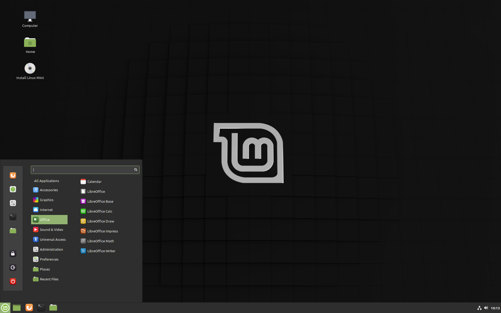

Linux Desktop Operating System
Linux Operating System History, Evolution and Future
The free software movement has revolutionized the software industry. The GNU project had designed a collaborative pattern for the development of software by providing them with the following freedom rights; users can freely run the software, copy and distribute it, learn it and modify it.GNU (GNU stands for GNU’s Not UNIX) is a milestone in the software development. 80% of the companies in the world is run by open source software. World’s Top 500 supercomputers are powered by Linux.Top 90% of the public cloud workload runs on Linux. 90% of the Fortune Global 500 relies on Red Hat products and services. 100% of airlines, telco, health care companies, and commercial banks in the Fortune Global 500 rely on Red Hat. The GNU project is an epic development in the history of Software. Prior to the development of this project, the domain of software development is locked in the clutches of the intellectual property right of the software publisher (Proprietary Software). In this closed software ecosystem, the source code is handled as a trade secret. The free software movement has revolutionized the software industry.
Open source software (OSS)
A software release where the user could use, modify and distribute it to any person and for any purpose. In 1998 Netscape Communication Corporation has released the Netscape Communicator as free software. It is the source code of this software that became the basis of Sea Monkey, Thunderbird and Mozilla Firefox. This act by Netscape has led to the formation of Free software foundation with free software ideas benefitting commercial software industry. Later this was revamped to ‘Open Source’ by Eric Raymond and Bruce Perens with the focus of sharing and collaborating on the software source code. In 2001, Microsoft executive has said that “open source is an intellectual property destroyer. I can’t imagine one thing that might be worse than this for the software system business and also the intellectual-property business.” Since then there is tremendous growth in the open source software and the scenario of the IT sector witnessed a shift of major software business and hi-tech companies to open source. Now the world has transformed into an open source community where it is estimated that 78% of the companies run open source software.
Linux Operating system
In 1989, Andrew S. Tanenbaum professor of computer science has released MINIX a minimal Unix like operating system with the intention of teaching the students the principles of the operating system. Later in 1991, Linux Torvalds has released a Unix like operating system based on Linux Kernel. The Linux OS (operating system) has registered a presidential growth as a member of open source family. Typical Linux distribution packages include Linux Kernal, Libraries and supporting software. Leading Linux distribution include Red hat Enterprise Linux, SUSE Linux, Debian and Ubuntu.In the starting, Linux was based on the Intel x86 architecture suitable for personal computers and very soon Linux developed into leading OS on servers and other big systems such as mainframe computers.It is notable that Linux is the only OS used in Top 500 supercomputers without facing any challenge. Linux also dominates the domain of embedded systems as well. Many smartphones and tablet computers run Android and other derivatives of Linux.It’s noteworthy that with the exception of Azure all the other dominant public clouds run both compute and storage on Linux. It is valued that 90% of the public cloud is powered by Linux. Moreover, it’s noted that UNIX has 99 of the Super computer market share and 62 of the embedded market share. Analytics on world usage shows that preparation of Linux will increase at a really fast rate whereas the competitive counterpart records a steep decline.
What makes Linux so special?
Looking into the significant features that give Linux a special look and value, it is found that Linux OS is known for Multi-user, Multi-tasking and Multi programming capabilities. It means that multiple users can access the various system resources at the same time. It also permits the system to run multiple applications at a time as well. Linux OS have a Hierarchical file system, a standard structure in which system files and user files are organized. Linux uses the Bash shell to execute commands of the operating system. The most significant outlook of Linux is its security, it provides user security using authentication with passwords, controls the access to specific files. It is same to be insulated to virus attack and is compatible with most of the hardware, Linux contains a great graphical interface and firewall could be a part of the kernel. Portability is another major feature of Linux OS. Linux kernel and application programs support the installation of any kind of hardware. Being a member of the open source family it provides ample space for collaboration.
Red Hat Enterprise Linux with $80 billion ecosystems is the World’s leading enterprise Linux platform. In line with the commercial standard Benchmark RHEL is that the 1st choice for reliability, scalability and performance.
Red Hat is known for the fastest developing server operating system in the world, it is because it is known for its superior performance and scalability whether it is a web server or application server or a database.
Few imprints of Red Hat across the nation and Internationally the world’s leading enterprise Linux, Red Hat provides solutions to many giant players and various crucial sectors that demand a high level of security and performance. Few of them includes Dream work animation the world famous American Animation studio utilizes the Red Hat portfolio to build a private cloud. The Solutions to the world’s second largest and India’s largest insurance provider
Life Insurance Corporation of India(LIC) is powered with Red Hat. India’s Largest banking sector
State Bank of India (SBI) is using Red Hat solutions. SBI life deploys cost-efficient IT system with substantial stability with Red Hat solutions. World’s fastest stock exchange
Bombay Stock Exchange (BSE) builds the world’s fastest trading system with Red Hat solutions. New York stock exchange (NYSE) runs trade on Red Hat Linux.
The International Airlines Group powers the hybrid cloud with Red Hat.
United States Department of Defense is the Single Biggest Install base for Red Hat in the world.
Red Hat powers NASA jet propulsion labs personal cloud. Wherever you go, whether it is in the space or deep water submarines or to a defense vertical or to the banking sector or to the financial trading unit or to an e-commerce platform or for a few entertainment….Red Hat is there.
Why Red Hat the most pursued choice of the enterprise world around the globe?
Red Hat allows skill transfer for application migration, it is known for its superior performance with more uptime and more user support. Red Hat features a 34th lower Total value of ownership (TCO) than windows. Red Hat provides military grade security with a lot of reliable, stable and agile IT platform. IT responds fast to business demands and has a greater role in strategic innovation. More than 90th of the Fortune international 500 rely on Red Hat product and services. 100% of airlines within the Fortune international 500 rely on Red Hat. 100% of telcos within the Fortune international 500 rely on Red Hat. 100% of healthcare firms within the Fortune international 500 rely on Red Hat. 100% of commercial banks in the Fortune Global 500 rely on Red Hat, 100% of U.S executive departments rely on Red Hat, Forbes lists Red Hat as one of the world’s most innovative companies. RHEL applications and services the varied application and services on the market with the Red Hat include Development tools like RHEL Developer Suite, RHEL Open Shift, RHEL Linux developer toolset, RHEL container development kit. It also provides middleware services like JBoss FUSE, JBoss A-MQ, JBoss Data Virtualization, JBoss BPM SUITE, JBoss Data Grid, JBoss Web Server Red Hat open shift. Among the Infrastructure, the software includes Red Hat Enterprise Linux, RHEL Storage, RHEL Open stack platform, RHEL Virtualization. Red Hat also provided Ansible Software automation tool, Red Hat Satellite and Red Hat Cloud Forms.